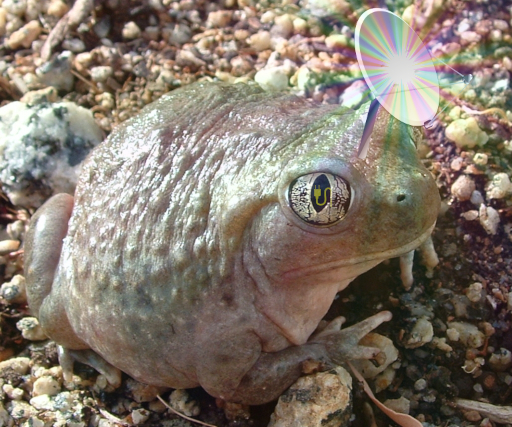

I made an RSS feed for my blog! It's a really simple format; I was able to implement my feed just by following the RSS 2.0 spec. Of course, RSS readers are a little less common than they were a decade ago; but there are plenty of extensions for Firefox---I'm using RSSPreview just to test the feed---and with how easy it was to extend my blog generator to generate XML alongside HTML I figured it was better to have a feed than not.
